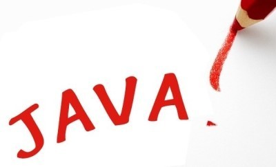
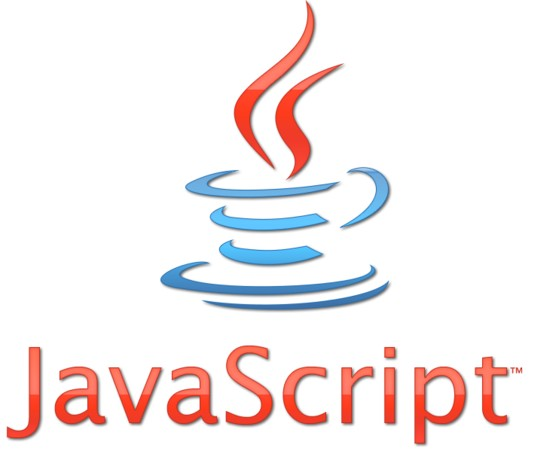

-
/ Javascript / C언어 (C++ 등 통합) / Python / Java / 영상 /
소계
JAVA
객체 지향 프로그래밍 언어로서 보안성이 뛰어나며 컴파일한 코드는 다른 운영 체제에서 사용할 수 있도록 클래스(class)로 제공된다. 객체 지향 언어인 C++ 언어의 객체 지향적인 장점을 살리면서 분산 환경을 지원하며 더욱 효율적이다.

자바 C/C++와 같이 간단하며 이 언어는 C++을 기반으로 개발되었으며 C++에서 혼란을 일으키는 부분을 제거했.
예를들어 C++의 문제가 되는것은 연산자 오버로딩,다중 상속 이다.
C는 연사자 오버로딩 지원이 안되어 C++이 몇가지 지원되고 다중 상속은 데이터를 여러곳의 부모태그의 자식태그가
되어 데이터베이스 등 문서를 이어받는것을 말한다 그리고 자바는 C++에 문제가 되는 기억 장소 경영
문제를 쓸모없는 자료를 자동 쓰레기 회수와 분류 별 할당되며 해결했다

자바는 그리고 부모개채의 데이터 메소드를 자식개채가 받아 상속을 받아 사용가능하다.
또한 자바는 보안에 강하다 한다. 그리고 이식성이 높아 많은 프로그램 시스템에 같은 코드를 사용한다
그리고 시스템의 특성을 고려안하고 같은 코드를 사용하지만,자바는 이것을 극복했다

그리고 여기서 로고도 똑같고 자바스크립트랑 뭐가 다른가하면
자바스크립트에는 상속성과 클래스가 없다.
그리고 자바스크립트는 HTML과 연관이 되 HTML이 없으면 못쓴다.